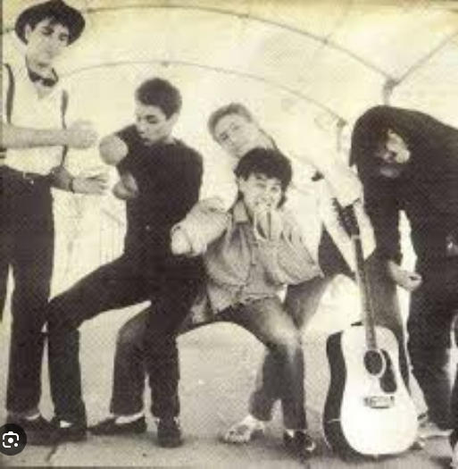

El grupo se creó en Córdoba el 17 de abril de 1986. Fue formado por JuanMa P. Copé (saxo), Paco Marín Rojano (guitarra), Fernando Prats (bajo), Fernando Alcántara (batería) y Patuchas (Juan Antonio Castillo, conocido posteriormente como Juan Antonio Canta) (voz). Su primer concierto lo dan en un pub de Córdoba llamado "Billar" en el que los oye Paco López, integrante de la Banda Sureña quien les anima a presentarse a un concurso cuyo premio es grabar una maqueta; quedaron los últimos. Aun así, López les ayuda a grabar una primera maqueta, que será pagada con el dinero sacado de su primera gran actuación, en el carnaval de Córdoba, en febrero de 1987. Con la maqueta bajo el brazo se trasladan a Madrid en busca de discográfica; finalmente, en mayo firman un contrato con Fonomusic para empezar a grabar en junio de ese mismo año. La grabación fue producida por Tomás Pacheco, quien fuera integrante del grupo Palmera (grupo conocido por su éxito "Devuélveme las llaves de la moto"), en los estudios Kirios. El primer LP, La primera en la frente sale a la venta en octubre de 1987, realizando su primera gira por España en el verano de 1988 y, en septiembre, por Argentina, donde el grupo cosecha un gran éxito. Al volver de la gira argentina, Paco Marín deja el grupo y entra a formar parte de él Charly Japón. Durante diciembre de 1988 graban su segundo disco, Somos dos lactantes en los estudios Sonoland de Madrid, dirigidos también por Tomás Pacheco. El verano de 1989 fue, en palabras de JuanMa P. Copé "el mejor del grupo". Realizaron una gira aún mayor que la del verano anterior; el Stage Manager fue Curro Orozco. En enero de 1990 JuanMa P. Copé y Charly Japón dejaron el grupo. Los siguientes discos fueron Tongo banana y Pabellón psiquiátrico. Finalmente, el grupo desaparece en 1992 y la discográfica decide editar un último disco llamado Lo más salvaje, que recoge 14 temas (10 de ellos de los dos primeros discos). La discográfica editó en 2002 un recopilatorio de los cuatro primeros discos llamado Edición limitada. En el año 2025 luego de presentar el documental "La primera de la frente: La historia de Pabellon Psiquiatrico" anuncian un show programado para el 18 de octubre en el Cordobita Fest en España, con Antuan Lamur en reemplazo de Patuchas
